ACCELERATE INFORMATION FLOW
In 2019, TXDOT (Texas Department of Transportion) provides us the opportunity to redesign their offical website. I took part in the whole process, as a researcher and designer. It is an individual project and lasts 3 months.
The project aims to improve their service, increase their influence and build their identity. During the research, I applied both quantity and qualitative research methods to analyze user behaviour and preference.
Client kickoff
In this kickoff meeting, we met with Beth Hallmark - the Communications Director for TxDOT. She illustrated the research areas that TxDOT would like us to help out by generative and evaluative research.
They want to rebuild TxDOT newsroom which will broadcast news on construction, travel information,etc. During the kickoff, we made a deep communication with Beth towards the the history of TxDOT, the strengths and weakness of TxDOT and their direct competitors and indirect competitors.
Question Approach
Through the process, a better understanding of the project has emerged and goals have been set with questions we need to approach.
We use 2 steps to formulate our main questions. The first step is to brainstorming - list questions in our mind. The second step is to use card sorting method to orgainze our questions and made into several categories.
Focus Discussion
In the first step, I created a bird of view to build a map to anlayze the relationship between causes and results and formualte the question.
In the second step, I created a depth of View and tried to think deeply to capture the essence and formulate core question.
Core Question 1: How to efficient, effective to transfer information to make Drivers on Texas safe, informed and engaged?
Core Question 2: How to provide information to increase the safety of Texas Drivers?
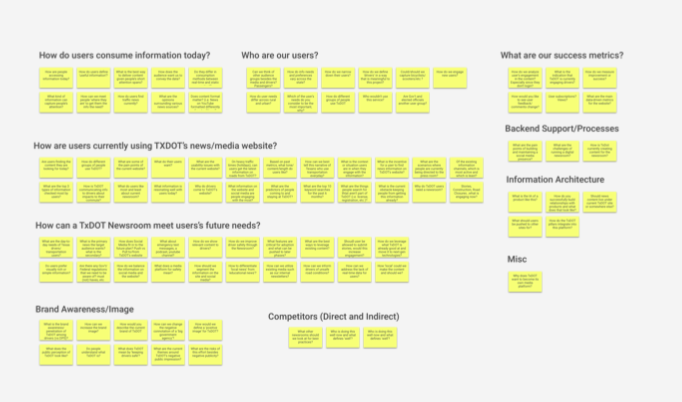
Focus
After we formulate questions, it is time to narrow down several questions into main question and support question.We need to focus on the primary questions and use analysis and research process to answer these questions.
Main Question
Information
How to provide information to increase safety of Texas Drivers?How to efficiently, effectively to transfer information to make Drivers on Texas safe, informed and engaged?How do people consume information today ?
Direct/Indirect Competitor
What is the best practice of newsroom now ?
Support Question
Users
Who are our users ?How are they currently using TXDOT’s news/media website ?How do they engaged with social media ?What do users want from social media ?
Design
Information architecture
Brand Awareness and Image
Analysis
According to the questions below, I will analyze and examine them through competitive analysis, past research from TxDoT department, literature review and data analysis from media channel.
From past research, participants were asked to indicate which adjectives from a list of words best described the TxDOT website.
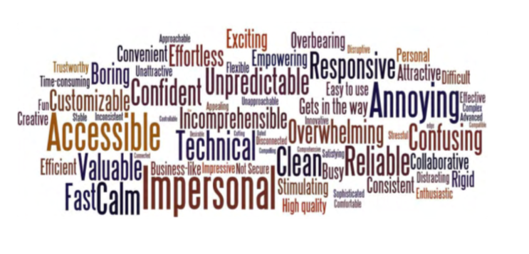
The website needs simplified and consistence and it is too overwhelming.
How to provide information to increase safety of Texas Drivers?How to efficiently, effectively to transfer information to make Drivers on Texas safe, informed and engaged?How do people consume information today ?
What is the best practice of newsroom now ?
Who are our users ?How are they currently using TXDOT’s news/media website ?How do they engaged with social media ?What do users want from social media ?
Information architecture Brand Awareness and Image
Analysis
According to the questions below, I will analyze and examine them through competitive analysis, past research from TxDoT department, literature review and data analysis from media channel.
From past research, participants were asked to indicate which adjectives from a list of words best described the TxDOT website.
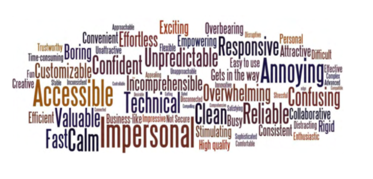The website needs simplified and consistence and it is too overwhelming.
Competitive Analysis
In competitve analysis, I explored two website to get insight from direct and indirect competitiors. One is UT news. The other is Spotify.
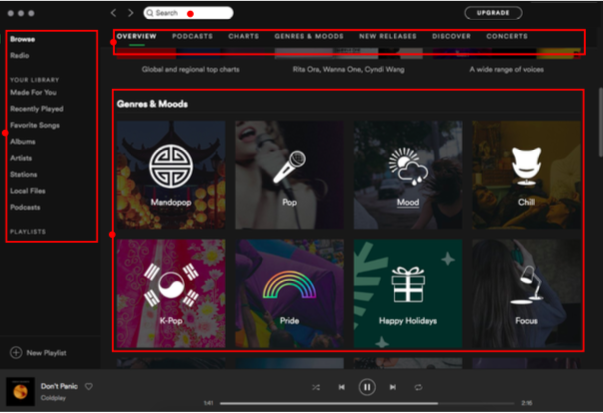Search Bar always shows on the top.
As a content medium, all of pieces of infomatin should be designed for user to easy find. That is the essence of medium. In this function, search is a quite important tool to help user find what he/she wants with effectively and efficiently.
Navigation is everywhere.
It is like in a real world. Without signpost, we can not find the location. Sometimes, one signpost is not enough for us to find destination. We need look for one signpost after another during the trip to find the destination.
Well-orgranized categroy is important.
Category is the tool to organize information. We always arrange our materials into different files. However, only the well-organized categroy can be exist for long time , easy to extend in the future and easy for user to understand and find.
Search Bar
disappear when user scroll down their pages.
located in the upper right position which make user hard to detect. From reserach, user eye will easily capture the left upper side zone.
Bad organzied Category
There is no realtionship between driver, government, business and careers. They are not parelled.
There is less relationship between driver, Inside TxDoT, Austin District, Contact Us, Distrcits, Business.
Literature Review
More information, more safe?
No. Simple, clear and logical information is better.
How can we use information to increase safety?
Include actions required that help user easily locate specific information.
How information help a person ?
Well organized and easy to absord and easy to attract user attention.
How persons absorb information ?
Nowadays, people always skimmed, only when they find some interesting, they will go back to read in depth.
What is attention span when they skim the Internet ?
The average attention span dropped from 12 seconds to eight seconds.
DATA ANALYSIS
We used R to analyze the data from website and also its social platform. In the website, we output the conversion rate from business section of website, driver section of website, government section of website and etc. In the social platform, we used data visualization to analyze the relationship between mood and month.
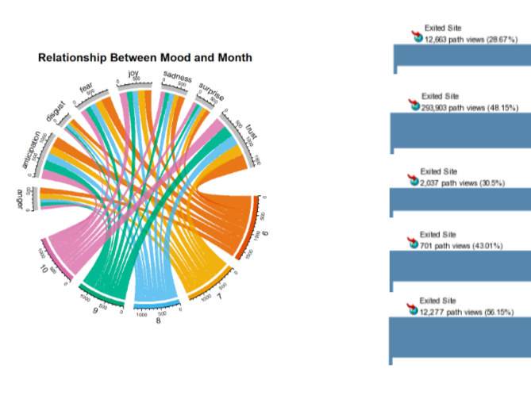User trust the website but when they go to website, most of them leave in a short time.
SME Interview
In our SME ( Subject Matter Expert ) Interview, we invited UT newsroom official to give us a lecture towards UT newsroom.
Website build a direct channel to the audiences.
Before website came into our eye, information, news, stories are transmitted by paid media. Website build a direct channel to the audiences, which is a benefit for any organization and business. So how to make use of this direct channel is main concern.
Write for direct audience
Different channels have different audiences. For various channels, we write and share different kinds of articles to target audiences. For example, in Linkedin social media, we share professional information about career or softskills, in twitter social media, we share short stories.
Notice social media policy
As an university social media, we should notice that our voice might stand for university’s attitude towards sensitive arguments. So, we have some policy. For example, “do not put opinion on the social media.”
Metrics
We are calculating KPI on “ share views ” of an article.
Survey
We collect more than 200 questionnaire through qualitcs system. 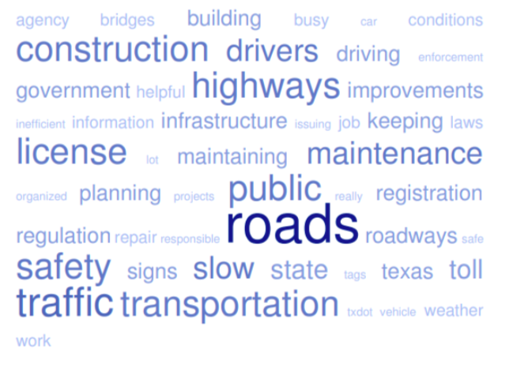
1 on 1 interview
Interview begins at screening, we use a seris of questions to screen our users and pick up the suitable users to our 1 on 1 interview. We conduct 27 interviews, every standard interview lasts 1 hour. Every interview will has one moderate and one note taker. Most of interviews are face to face. Some are remote interview. In remote interview, we applied the video communication tool to conduct interview.
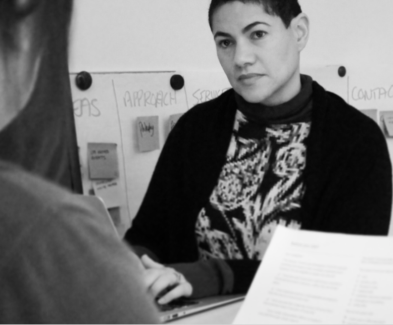Takeaway
Website link is end with gov. means government which feel it is an official website.
A lot of picture of people shows in the middle which made user feel messy.
Keyword is not eye-catching.
Words and picture should attract users, not too much tiny words.
Topic words is not big enough and should be less words and more important words there.
Usability Testing
This usability testing is conducted to evaluate the website http://www.txdot.gov usability. Its goal is to facilitate the development of TXDOT website.The website was assessed using the Think Aloud method ( Nielsen, 2012) , enabling the interviewees to independently finish two tasks in the website and after that make a metrics evaluation towards website. Most of usability testing was conducted face to face. For remote usability testing, we used desktop sharing software to communicate. After tests, we accumulate quantative and quality data and drew out weak points concerning the usability of website.
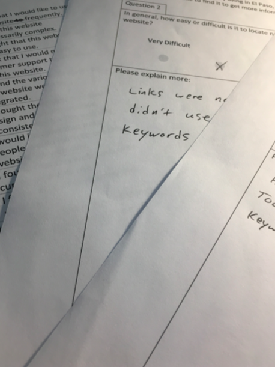Takeaway
Too much content
Too much content in the pages distracts user from finishing their task. Some users even forgot what their task is when they want to finish tasks in the website pages even they have read aloud the task description just 1 minute ago.
Less organized, No hierarchy
In the search results page, the information is not well-organized.
optimize the search result quality
There exists too much similar information in the search results.Even the user search the right keywords, the files she wants to search is not in the first three results.
put search bar in the vivid place
Many user cannot notice search bar.
Recommendation
In the recommedation section, I provide the whole strategy and actions that TXDOT can used to their next product iteration.
Article: Every article should be well-written.
• Words expression should be precise and consistent.
• Article should be organized into three format: long reading,summary,action.
• Action and Summary should be put in front.
• Relative files download should be put in the specific location in front.
Page: Every page should be well-organized.
• Every page should be well-organized.
• The style between pages should be consistence.
• Pages should hold clear navigation location.
• Every pages should has its location name.
• Page should be visual hierarch. Page has its function.
• Easy to read articles. Their should include navigation in the articles.
• Easy to navigate to other pages.
• Easy to make user understand the whole picture of website.
Website: It should be a clear, simple and functional website.
• A clear and easy to extend information architecture.
• first rate level navigation system.
• A well-functional front page.
• Official, safe and upright image influence.
• Easy and Efficient to grasp information.
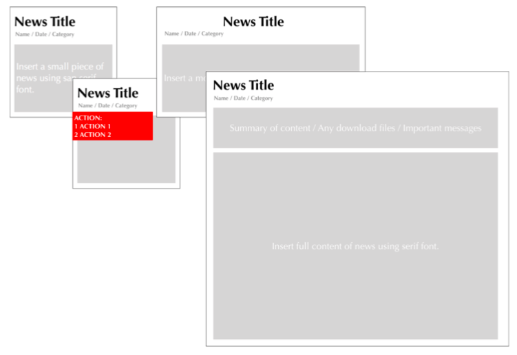Recommendation for Redesign
Reorganize the content
Problem - Old design did not show a consistence of content,therefore, it is very hard for the users to absorb the different format of information.
Solution - Using block is a trend way to organize different format and at the same time keeping consistence.
Reorganize the user action
Problem - The user actions split around the old design interface, it is hard for user to find and take actions.
Solution - Reorganize all of the actions in the left column and make the icon consistence for users to recognize.
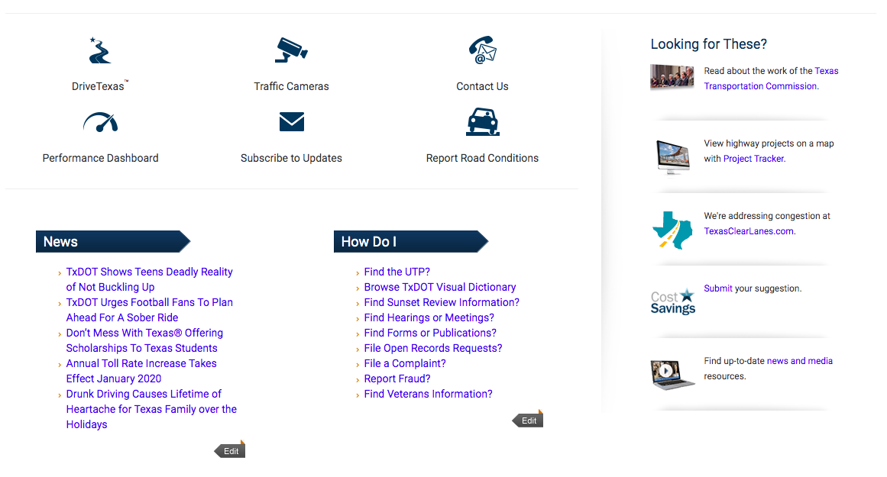Increase the information flow
Problem - Old design only put information in the page and neglect the entertainment and information flow.
Solution - Colorful label and moving information block appeals users and speed the information absorption.
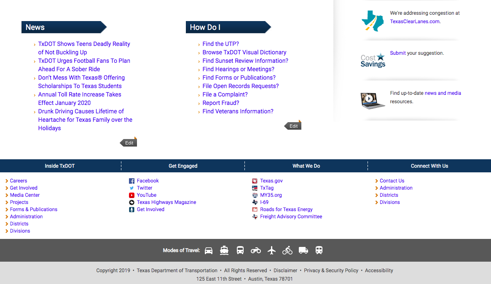